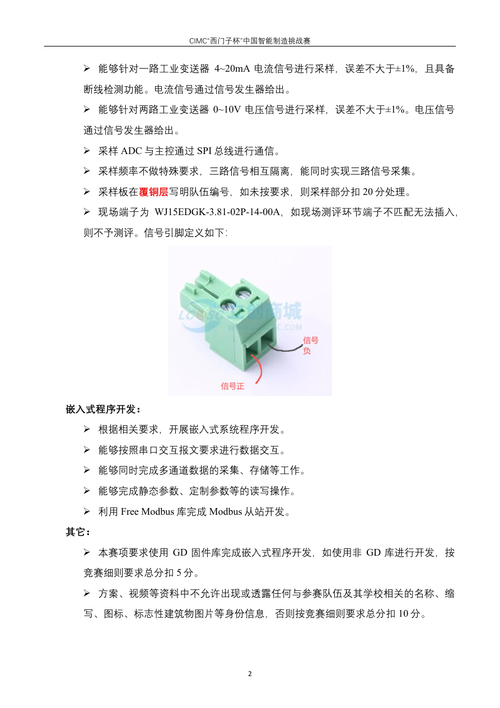

工业嵌入式系统开发 · 工程模板配套作战手册

三通道采样、±1%、隔离、端子、FreeModbus、GD 库。
Flash 分区、自定义协议、自动测评和 Bootloader。
赛场和参赛安排，以后续通知为准。
两份协议资料和大赛 FreeModbus 原包。
从首帧通信到标定、存储、排障、改题、答辩和八节训练。
Keil 入口、完整烧录组合和现场回退。
解释工程中两套地址定义，明确当前有效路径。
哪些已构建，哪些必须硬测，哪些只是预留。
Windows 单文件 EXE，支持三通道趋势、冻结、CSV 记录/回放、PNG 导出、寄存器、原始报文和初赛升级。
资源数据、SHA-256、原始构建日志。
PowerShell 搜索正文，检查核心资料和日志。